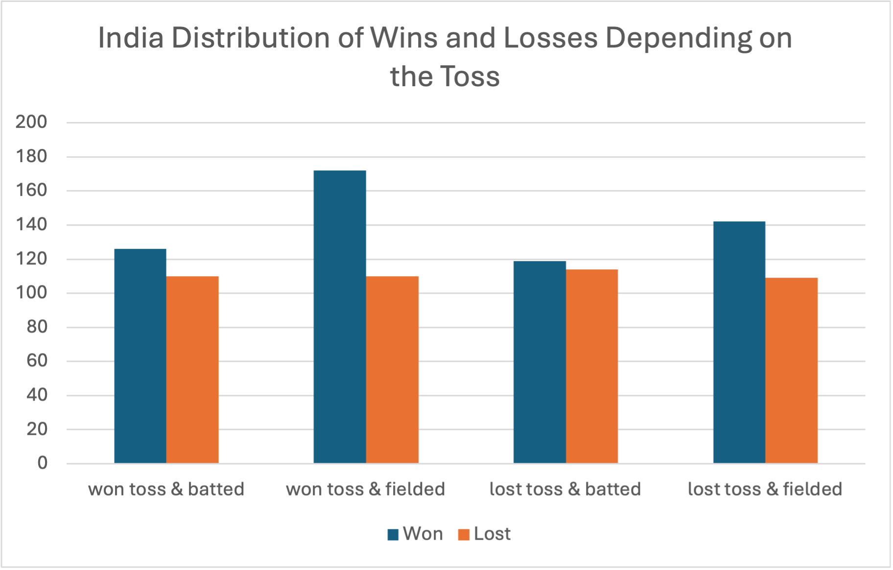
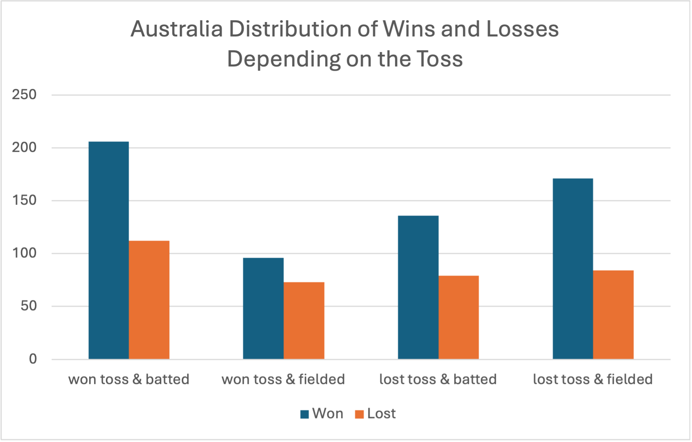
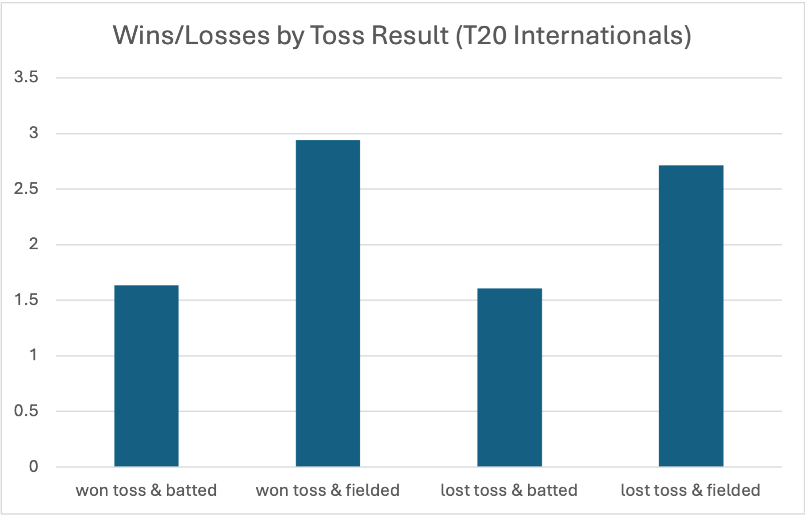
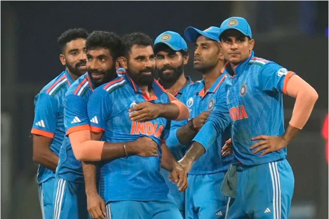

To Bowl or not to Bowl
By Giulia Roy | May 15, 2024

Always bowl first. That’s a phrase my dad has heard and rolled his eyes at more times than he can count in the last few years. As a kid growing up in India, my dad listened on the radio to lots of cricket commentary. When I started high school, I finally agreed to watch a game with him, and have loved it ever since. Naturally, I have been a fan of the Indian national cricket team since then. I’ve followed hundreds of exciting matches full of thrilling wickets and tight chases, but if you ask my dad, he’d say I am most nervous for the toss. So why do I say “always bowl first” before every match? I would say I’m only half-joking. Every knowledgeable cricket fan knows that the toss is a crucial part of any cricket match. Depending on the weather conditions, the nature of the pitch, and other factors, making the right choice of batting or bowling first can give a huge advantage to the team winning the toss. Therefore, always bowling first is not the smartest idea by any means.
However, I have always thought that the Indian national team has the best bowling attack in the world. Though I may be partial, the likes of Jasprit Bumrah, Mohammed Shami, and Ravindra Jadeja form a truly formidable opposition. I am always more at ease when India bowls first not only because of the star-studded lineup, but also because it allows the batters to understand how to go about their overs. Having a total to chase means having a starting point and a reference. Having been able to watch how the ball behaves on that particular surface allows the batters to plan their approach. In my mind that is immensely valuable, but I wanted to see if the data does bear this out. I used ESPNcricinfo’s cricket data to examine this question.
The chart above shows the Indian cricket team’s wins and losses based on the toss outcome across all ODI matches. Overall, the team did better when they bowled first regardless of whether they won the toss or not. This is interesting because winning the toss is usually an automatic advantage, sometimes large and sometimes small. The fact that the Indian team performed better when losing the toss and fielding than when winning the toss and batting is therefore curious. Next, I looked at how the Indian team performed in different locations.
The graphs above show that in home and away games the Indian team performed much better bowling first regardless of whether they won the toss or not. However, in neutral games this phenomenon was much less pronounced. In fact, in neutral games, which comprise mostly of world cups and other international competitions, the differences in the win loss proportions based on toss outcomes were quite negligible. From the above distributions, it seems that the Indian team tends to do better when bowling first even when they lose the toss. I wanted to see if this trend was noticeable for other top international cricket teams. I chose to look at Australia’s games as they have been a dominant team over the years.
The Australian team’s distribution looks very different to the one of the Indian team. As the graph shows above, Australia has done extremely well when they won the toss and batted but not done very well when they won the toss and fielded first. This is essentially the opposite of the Indian team. Therefore, India’s trends do not match that of another highly rated team.
Finally, I wanted to see if the patterns seen across ODIs for the Indian national cricket team showed up in the T20I category as well. The graph above shows that again, the Indian team does a lot better when it bowls first even if it loses the toss. The fact that this is the case for T- 20’s alone lends greater weight to the overall trend because it shows that even in the shortest format where dew makes the toss very important, the team wins more frequently if they bowl first having won or lost the toss.
The numbers show that indeed the Indian cricket team has historically performed better when bowling first. While this is by no means evidence that India should always bowl first, it could be used as a factor when considering the toss in games when batting or bowling first is seen as equally favorable. No matter what, I will always look forward to watching the Indian cricket team continue to play great cricket, and to nervously awaiting their toss decisions.
